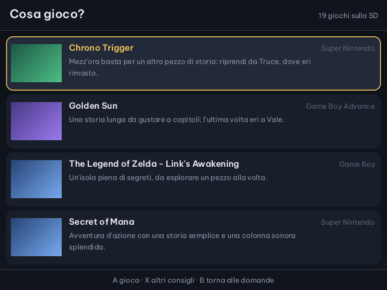
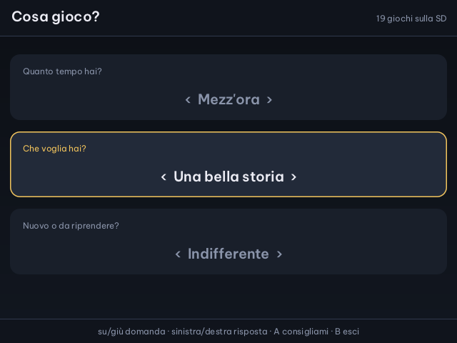

Cirmolo · intelligenza artificiale sulla Miyoo Flip
Cosa gioco?
Hai migliaia di giochi sulla scheda SD e non sai da dove cominciare. Rispondi a tre domande e un modello di intelligenza artificiale sceglie quattro giochi della tua collezione, spiegando perché. A fa partire quello che ti convince.
Tiene conto del diario delle partite: sa a cosa hai giocato e dove eri rimasto.
In App, cartella Giochi. Usa lo stesso modello e le stesse chiavi di Chiedi all'IA.

Le domande
Quanto tempo, che voglia, nuovo o da riprendere
Su e giù scelgono la domanda, sinistra e destra la risposta. A chiede i consigli, B esce.

- Quanto tempo hai?pochi minuti, mezz'ora, un'ora o più
- Che voglia hai?qualunque cosa, azione veloce, una bella storia, qualcosa di rilassante, una sfida, da giocare in due
- Nuovo o da riprendere?indifferente, un gioco nuovo, uno da riprendere tra quelli del diario
I consigli
Solo giochi che hai davvero
Il modello riceve l'elenco dei giochi della tua SD, sistema per sistema, e il riassunto del diario. I giochi che propone vengono cercati nella collezione: quelli che non ci sono vengono scartati.
Nella pagina dei consigli
| Su · giù | sceglie il gioco |
| A | lo avvia |
| X | altri quattro consigli, diversi da quelli già visti |
| B | torna alle domande |
Si parte da qui
Il gioco scelto parte come da PyUI, con il registro delle attività e la ripresa automatica. Quando esci dal gioco torni al menu.
Una collezione grande
La SD viene letta all'apertura: sulla Flip di prova oltre cinquemila giochi in 34 sistemi, in circa un secondo. Di ogni gioco si tiene una sola edizione, preferendo quella con l'italiano.
Cosa serve
Il Wi-Fi e un modello
Cosa gioco? usa il modello della console scelto in Chiedi all'IA, scheda Console; se non ce n'è uno, quello della chat. Va bene anche un modello gratuito, come GLM-4.6V-Flash di Z.ai.
Saves/claude/chiavi/<fornitore>.txtla chiave del fornitore, la stessa di Chiedi all'IASaves/claude/diario/diario.jsonlil diario delle partite, vedi L'IA nei giochiSaves/spruce/ia-consigli.logil registro dell'appApp/ClaudeChat/src/consigli_app.cil codice, con le prove automatiche
Le altre app